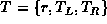

Data Structures and Algorithms
with Object-Oriented Design Patterns in Java
Data Structures and Algorithms
with Object-Oriented Design Patterns in JavaInserting an item into an AVL tree is a two-part process. First, the item is inserted into the tree using the usual method for insertion in binary search trees. After the item has been inserted, it is necessary to check that the resulting tree is still AVL balanced and to balance the tree when it is not.
Just as in a regular binary search tree, items are inserted into AVL trees by attaching them to the leaves. To find the correct leaf we pretend that the item is already in the tree and follow the path taken by the find method to determine where the item should go. Assuming that the item is not already in the tree, the search is unsuccessful and terminates an an external, empty node. The item to be inserted is placed in that external node.
Inserting an item in a given external node affects potentially the heights of all of the nodes along the access path , i.e., the path from the root to that node. Of course, when an item is inserted in a tree, the height of the tree may increase by one. Therefore, to ensure that it resulting tree is still AVL balanced, the heights of all the nodes along the access path must be recomputed and the AVL balance condition must be checked.
Sometimes increasing the height of a subtree does not violate the
AVL balance condition.
For example, consider an AVL tree .
Let  and be the heights of
and be the heights of  and
and  , respectively.
Since T is an AVL tree, then .
Now, suppose that .
Then, if we insert an item into
, respectively.
Since T is an AVL tree, then .
Now, suppose that .
Then, if we insert an item into  ,
its height may increase by one to .
The resulting tree is still AVL balanced since .
In fact, this particular insertion actually makes the tree more balanced!
Similarly if initially,
an insertion in either subtree will not result in a violation
of the balance condition at the root of T.
,
its height may increase by one to .
The resulting tree is still AVL balanced since .
In fact, this particular insertion actually makes the tree more balanced!
Similarly if initially,
an insertion in either subtree will not result in a violation
of the balance condition at the root of T.
On the other hand, if and an the insertion of an item
into the left subtree  increases the height of that tree to ,
the AVL balance condition is no longer satisfied because .
Therefore it is necessary to change the structure of the tree
to bring it back into balance.
increases the height of that tree to ,
the AVL balance condition is no longer satisfied because .
Therefore it is necessary to change the structure of the tree
to bring it back into balance.
 Copyright © 1998 by Bruno R. Preiss, P.Eng. All rights reserved.
Copyright © 1998 by Bruno R. Preiss, P.Eng. All rights reserved.